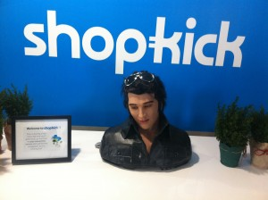

Day 4, Silicon Valley IXP
silicon-valley-ixpyear-twoShopkick company visit (Doug Galen, Chief Revenue Officer)

"Each one of my jobs has been --- in my own definition --- a holy crusade."
=> eBay = little guys vs. big guy in retail
=> Shutterfly = photo storage for a new dad
=> Shopkick = the retail experience is bad; technology can make it personal
{kind=link}
On career moves:
-- Do informational interviews until the cows come home.
-- Think about your personal pitch: "I'm the real estate guy who can make things happen on the Internet" vs. "I know a ton about commercial real estate."
Biz dev (or, how a dinky Silicon Valley startup does a deal with Citi)
(1) Use your network to get the right intros: board members, friends, colleagues. Cold-calls can work, but they have a low probability of success.
(2) Be relentless.
(3) Have passion and conviction about your idea.
Staging a launch: Shopkick needed to prove that people would use it. Testing validated their hypothesis, but also made them realize that people would try to game the system (vast majority of check-ins were fraudulent).
Shopkick's critical mix: sticky (personalized), rewarding (builds brand loyalty), fun.
Ruled out any features/decisions that did not obviously benefit consumers. Users don't like being exploited. And why are you in business anyway? Probably not to take advantage of your customers.
Designing a product that fits into existing behavior: look at absolutely every asset/behavior => the microphone on a smartphone
Shopkick did not execute Lean. Problems with small-scale testing/limited commitment from customers:
-- It takes big companies forever to scale up investment
-- Without skin in the game, customers wouldn't put real muscle behind product roll-out.
Shopkick retail partners: actual purchasing decision always ended up at CEO or CMO level. Great for getting buy-in, but makes the selling process a lot more challenging.
Lessons from TheFunded.com (Adeo Ressi)
"Your job is to kill bad ideas."
(Also, "What was that nod you gave me?!?")
Adeo's seven rules:
-- Simple ideas win. (Complex ideas die)
One company, one product, one revenue source
-- You have one revenue stream. (Or a bad business)
And the steps to revenue should be few (partner arrangements don't usually work).
-- Name your ideal customer. (And befriend them)
-- Make something explainable. (In 10 words or less)
-- Small markets suck. (And you will die winning them. Because it's not energizing/fun.)
-- Mix in some secret sauce. (To show that you're an expert)
Example: B2C secret sauce tends to be around user acquisition.
-- Be original. (By being new or better)
Additional takeaways:
-- Don't name your company something that you yourself cannot pronounce.
-- Don't name your company something that is difficult to spell.
-- Avoid buzzwords (or at least be able to pitch your idea without them).
Product Management (Marty Cagan)
"Our job is to invent on behalf of the user." -- Jeff Bezos
(1) Obsess over your customers. Become the undisputed expert on them. If you're not meeting with three of them per week, you're wrong.
"No facts exist inside the building; only opinions." -- Steve Blank
(2) Distinguish vision from illusion.
"If you continue to improve a product enough, you'll eventually ruin it." -- David Pogue
(3) Define success. Know what you are trying to accomplish; have a scorecard for your product.
(4) Embrace user experience. Design is how it all works, not just how it looks.
"Don't fall in love."
Get customer feedback every two weeks at least; avoid getting attached to ideas.
(5) Fail fast. Make product discovery the core competency of your product function.
Do A/B testing to prove/disprove that something works. Do customer observation to figure out why something works (or doesn't work).
(6) Ensure true collaboration (between product manager, designer, and developer).
"Nothing is what happens when too many people have to agree." -- Seth Godin
(7) Improve fast. Products should be viable, usable, and feasible (compare to Ideo).
(8) Be agile. Build and deploy incrementally, but have a compelling overall vision.
(9) Demand excellence. Worry about every pixel.
Someone's first experience meeting Jeff Bezos: Bezos on top of a desk in his office yelling, "Someone get me a gun so I can shoot myself so that I don't have to face our customers after we expose them to this product."
"Any company that has something called an Innovation Lab --- there's probably a problem." -- Cagan (ouch)
Hackers and Founders event (Tom Eisenmann and Ben Horowitz [Netscape, LoudCloud, Andreessen Horowitz])
Classic MBA problems:
-- Delusional sense of competence
-- Sense of entitlement
-- Wrong kind of ambition (hungry for yourself, not hungry for the company)
On Lean Startup: Part of finding your product market is figuring out how to sell the product.
"It turns out, selling things is hard." -- Ben Horowitz
People think that the best technology always wins. Actually, the best technology doesn't always win (example: Oracle). But the winning product becomes the best technology, because they make all the money and hire the best engineers.
Life in a startup:
"I find you only experience two emotions --- terror and euphoria --- and the lack of sleep enhances them both."
On companies with long-term vision:
Think about the 20th employee. Because he or she is not getting any equity, but you need to be able to emotionally move people enough to attract someone good.
This resonated with me a lot (example: athenahealth).
- Next: Dropbox (LTV, Monday, Week 1)
- Previous: Day 5, Silicon Valley IXP